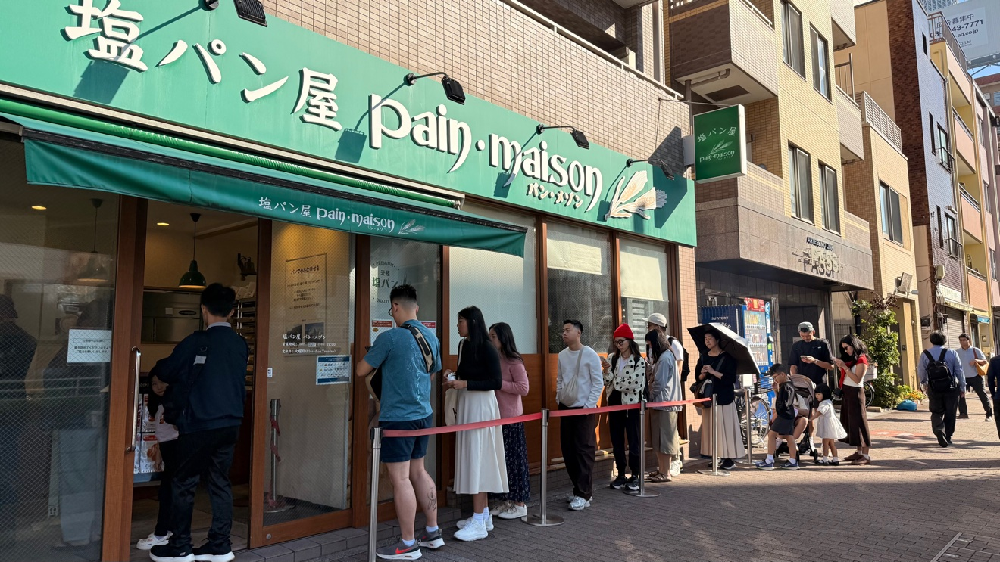
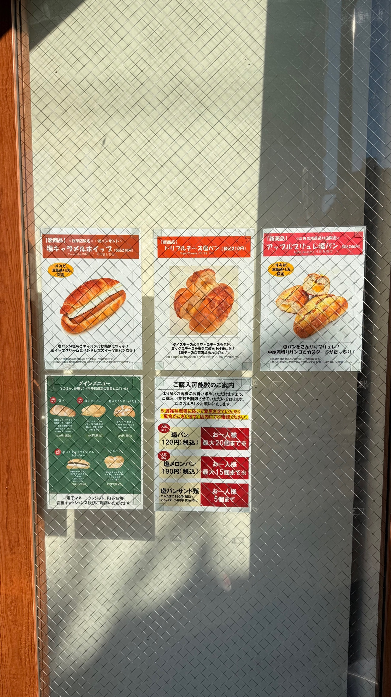
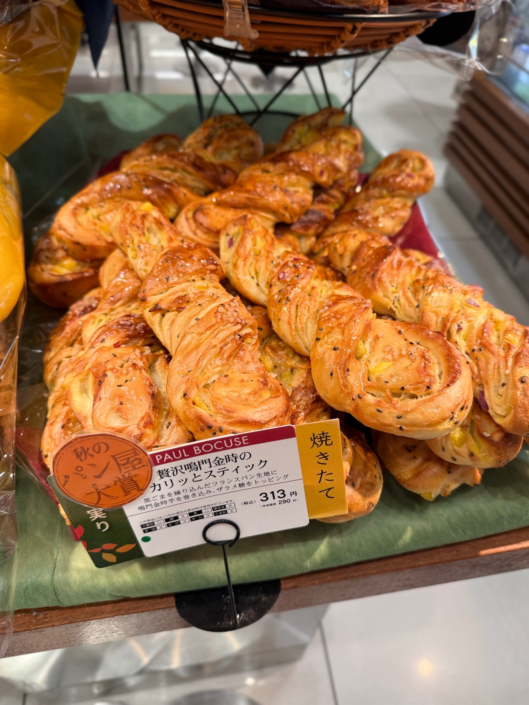
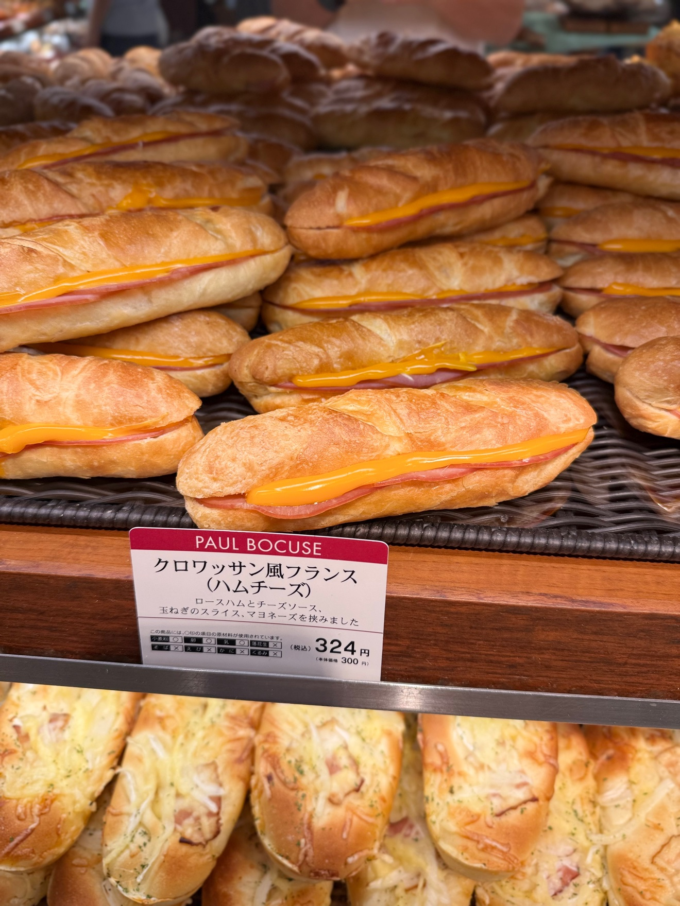
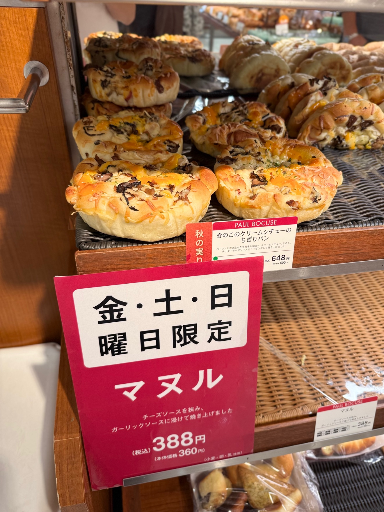
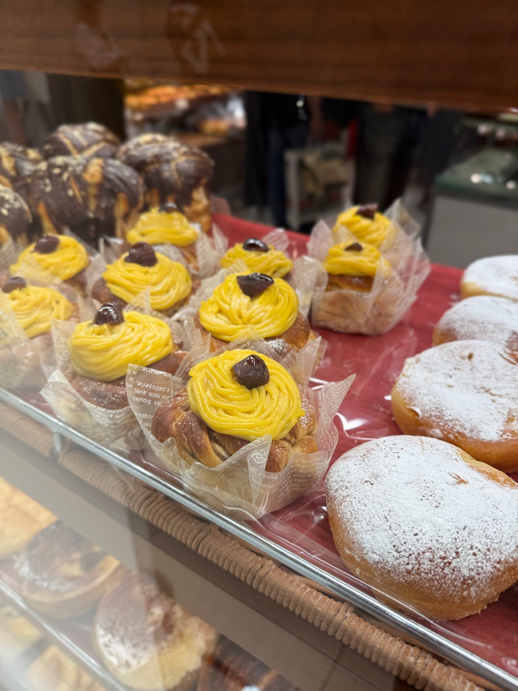
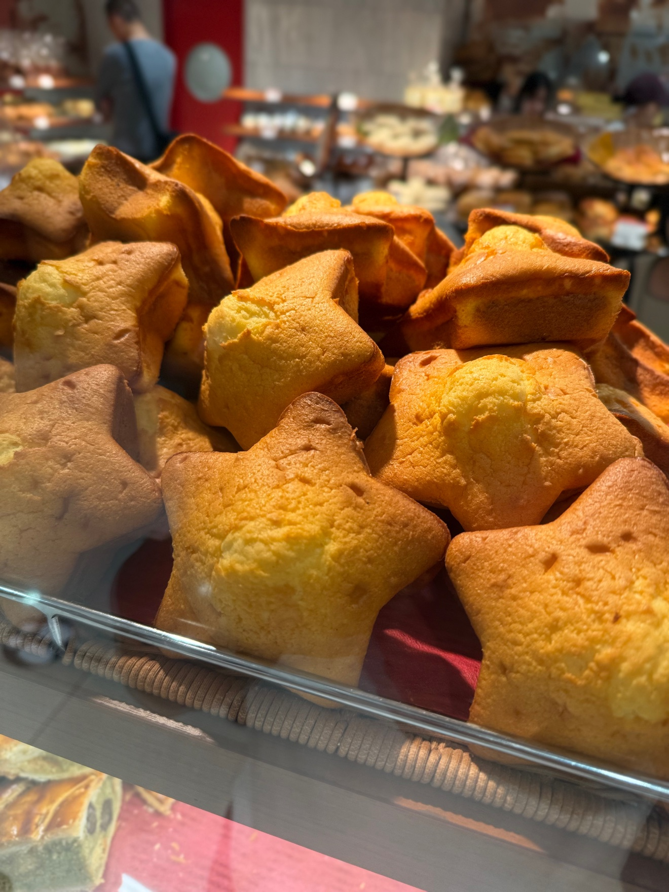
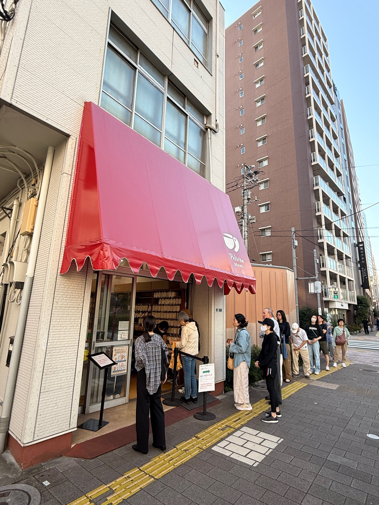
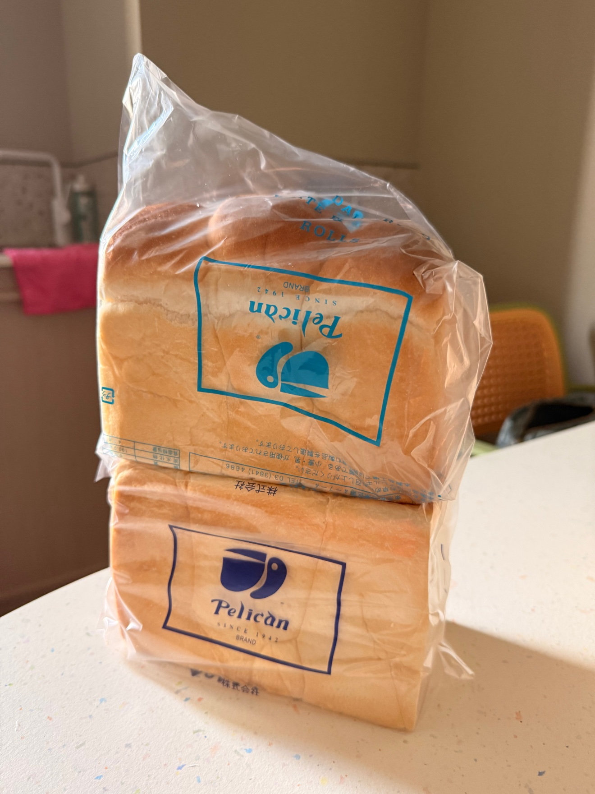

這趟東京行，我一口氣排了三家麵包店。三家風格完全不同：鹽麵包專門店、法式麵包、只賣吐司和餐包的老舖。共同點只有一個：都要排隊。

一、塩パン屋 Pain Maison（すみだ浅草通り店）
鹽麵包的元祖，本店在愛媛。東京這家在墨田區吾妻橋，本所吾妻橋站出來走一分鐘就到。
招牌鹽麵包一個 ¥120，這價格在東京幾乎找不到對手。一人限購 20 個，隊伍還是從店裡排到門外。外皮脆、裡面軟，奶油鹹香，難怪是人氣 No.1。

這家店的限定款也值得試：蘋果烤布蕾鹽麵包 ¥240（本店限定）、鹽焦糖鮮奶油夾心 ¥210、三重起司鹽麵包 ¥210。鹽菠蘿麵包 ¥190 是人氣 No.2，一人限購 15 個。
早上 7:30 就開門，我 8 點多到已經在排了，想吃要趁早。
二、PAUL BOCUSE BAKERY（大丸東京店）
法國名廚 Paul Bocuse 的麵包品牌，在大丸東京 B1，東京車站八重洲北口出來就到，趕車前順手買很方便。
🍠 鳴門金時地瓜酥脆棒 ¥313

秋天去剛好碰到秋季限定。法國麵包麵糰捲了鳴門金時地瓜和黑芝麻，灑上粗糖，烤得酥酥脆脆，牌子上還寫著秋季麵包大賞。
🥖 火腿起司可頌風法國麵包 ¥324

鹹食的基本款，份量紮實，當一餐剛好。
🍄 野菇奶油燉菜手撕麵包 ¥648

奶油燉菜、野菇、切達起司醬，份量不小，兩個人分剛好。旁邊的韓式蒜香起司麵包「マヌル」¥388 只有週五、六、日才有，想吃要挑日子。
🌰 栗子蒙布朗丹麥

黃色栗子奶油擠成一座小山，賣相很好，是秋天的味道。
⭐ 星星造型蛋糕

櫃子裡的星星造型蛋糕一顆顆排好，造型討喜。這家甜的鹹的都強，選擇困難的人會在櫃子前面站很久。
三、パンのペリカン Pelican（淺草・田原町）
1942 年創業的老舖，在台東區壽，田原町站走 3 分鐘。這家最厲害的是：80 多年來只賣兩種東西，吐司和餐包。

他們的理念是「做得像白飯一樣、每天都能吃的麵包」。東京不少喫茶店、餐廳用的吐司就是他們家的。早上 8 點開門，我到的時候已經排了一列。

我買了吐司和餐包各一袋帶走。提醒一下：週日休息，別撲空。
備註
本文照片皆為金霸本人實拍，價格為 2026 年 10 月拍攝當時店內標價，品項、價格與營業時間以各店公告為準。店家資訊：塩パン屋 Pain Maison すみだ浅草通り店（東京都墨田區吾妻橋 2-4-1）；PAUL BOCUSE BAKERY 大丸東京店（東京都千代田區丸之內 1-9-1，大丸東京店 B1F）；パンのペリカン（東京都台東區壽 4-7-4，1942 年創業）。發布日期：2026 年 10 月 24 日。